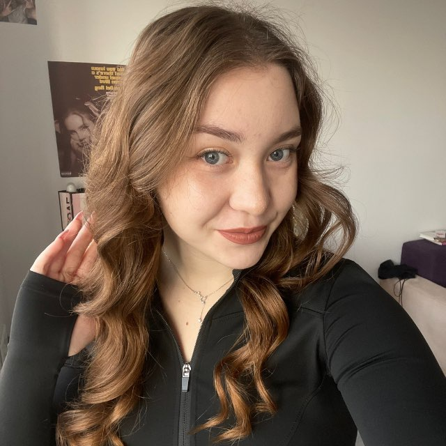

Дар'я Назаренко
Персональний тренер та нутриціолог
Дата народження: 03.09.2007 | Національність: Українка
Досвід роботи
TopHalls Fitness Studio
Персональний тренер та нутриціолог
Розробка індивідуальних тренувальних програм, консультації з харчування, коригування вправ для безпеки клієнтів, оцінка фізичного стану та визначення цілей клієнтів.
Освіта
Краматорська Загальноосвітня Школа № 25
Повна загальна середня освіта
Напрямок: Природничі науки, математика та статистика
Професійні навички
Мовні навички
Волонтерська діяльність
Дитяча гімнастика у Ковелі
Організація занять з дитячої гімнастики. Гімнастика – це не просто спорт, а шлях до гармонійного розвитку. Вправи допомагають зміцнити м'язи, сформувати правильну поставу та покращити гнучкість. Кожне заняття виховує впевненість у кожному русі та підвищує координацію. Діти вчаться відчувати баланс, контролювати своє тіло та відкривати нові здібності.
Хобі та інтереси
💃 Танці
Танцювала у Краматорському ансамблі естрадного та спортивного танцю "Деліс" (2017-2022). Отримала всі необхідні сценічні навички. Продовжила кар'єру у Львові в ансамблі "Ритми часу". Також готувала дітей до танцювальних конкурсів (вересень 2023 – червень 2024).